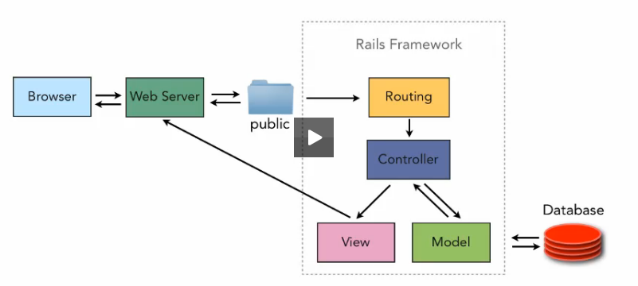

Learning the MVC architecture of Ruby on Rails has pushed me into my learning zone. Fortunately for me, I love learning new concepts; and in my journey to grasp the Model-View-Controller architecture of Rails, I have begun a beautiful friendship. Now, MVC and me go everywhere together.
We took a walk in the park the other day, and MVC told me that I should keep all my static assets in the ‘/public’ folder, because it’s a waste of time to enter the whole Rails Framework if the web server is requesting something simple like a .png image. The /public folder keeps that static content right there readily accessible. If, however, the web server is requesting content that needs to be generated dynamically, well...that’s what Rails routing is for! Hahh HA! Oh that MVC has a wicked sense of humor.
Yesterday, sitting in the Rain of Shine Coffee House on SE Division and 60th, I asked MVC to tell me what happens after the routing has determined which Controller action to use. MVC told me that the Controller will ask Models and the database (via the Models) to provide it with what it needs to complete the web server’s request. The Controller will then render a View -- using the data it gets from the Model -- and return it to the web server (which sends it to the browser).
I said, “Wow, MVC. I have no idea what you just said.”
So MVC drew me a little picture and it all made sense. He’s a good friend.
